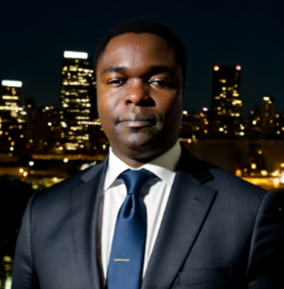

Engineer · Network Planning Manager · goes by Ellison · Melbourne, Australia
I like to build AI systems that take real actions in the real world — groceries, phone calls, tenders, home networks.
2025–now — Network Planning Manager, Data / AI / Platform Engineering at Metcash / TTHG / Mitre 10. Building Meridian, a decision-support platform on Microsoft Fabric, AWS, Python/SQL and LLM/ML workflows — turning ambiguous network-strategy and performance questions into working system components: data models, processing logic, guardrails, dashboards and narrative outputs.
2020–2025 — Solutions Architect / Senior Network Engineer at nbn Australia. Wrote Python automation that replaced manual RF/network design — long manual cycles cut to hours with consistent, repeatable outputs. Built and validated mmWave 5G line-of-sight prediction at scale as an input to the Max Achievable Speed Engine (MASE), and helped move Network Standard Design logic from spreadsheets toward governed system workflows.
2018–2020 — Network Engineer at Ericsson. Performance, troubleshooting and optimisation across infrastructure projects — using interface, KPI and operational data to isolate faults, validate changes and improve reliability and capacity.
2018 — Design Engineer at Telstra. Metro Ethernet and fibre transport — L1/L2 physical and logical network designs.
2011–2017 — Consultant / Engineer at Astellia, Huawei & Econet Wireless (Africa / Europe / China). Network analytics, probe-based assurance, call tracing, KPI extraction, RAN optimisation and field support across operator environments.
2005–2010 — BEng, Electronic Engineering at NUST, with a 2008–2009 embedded systems / FPGA internship at BFH, Bern, Switzerland.
I’m an engineer and network planning manager with 15 years across telecommunications, network engineering, data platforms and applied AI. My background is production engineering depth — RAN, fixed wireless, fibre, transmission, performance, capacity and the operational systems that keep networks running — at nbn, Ericsson, Telstra, Huawei, Astellia and Econet.
These days my build work spans the full AI stack: LLM applications, tool-use and function-calling, API/backend services, cloud and data platforms, and AI infrastructure. What I care about is the same thing that made network automation worth doing — taking work that’s slow, manual and repetitive and turning it into repeatable, observable systems. Only now the systems can talk, decide and act.
An assistant reached through Discord that can actually touch my Mac and local workflows, not just chat. It runs real life-management: grocery shopping across Coles and Woolworths, school events and comms, meal planning, home-network management and parental controls. Under the hood: persistent context, tool/action routing, command boundaries, safe-execution rules, logs and evaluation loops that improve it from real use.
A product vision for a world where the best interface is no interface at all: an AI agent hits a task it can’t finish, describes the skill it needs, the skill gets built on demand, the agent pays for it, and it completes the job. Forms, prompts, context and API actions become repeatable, callable automation — without every use case needing a bespoke software project.
A receptionist workflow for the unanswered-phone problem: missed-call recovery, customer intake, job classification, urgency detection, booking handoff and human escalation — with business-specific instructions, transcript summaries, CRM/calendar hooks and confidence-based fallbacks. Built for plumbers, electricians and other operators who lose work after hours.
An AI-assisted procurement workflow for tender/RFP analysis: document ingestion, requirement extraction, supplier comparison, response drafting and structured decision support — faster tender comprehension and cleaner supplier comparison, while the commercial judgement stays human.
LLM applications — prompt design, structured outputs, tool-use / function calling, retrieval-assisted and source-grounded responses, evaluation, guardrails and human review.
Backend & platform — Python, SQL, REST/API design, FastAPI-style services, Node.js/TypeScript, webhooks, JSON schemas, Git-based delivery.
Cloud & data — AWS (Lambda / DynamoDB / CDK), Microsoft Fabric, PostgreSQL/PostGIS, ingestion, transformation, dashboards and reproducible pipelines.
AI infrastructure — NVIDIA-Certified Associate (AI Infrastructure & Operations), GPU/HPC fundamentals, Spectrum/Mellanox concepts, Linux, Docker/Kubernetes and production observability.
Melbourne, VIC · tmudavanhu@gmail.com · 0410 386 167 ·
linkedin.com/in/ellison-mudavanhu ·
github.com/tech-ten
Mirrored at ellisonmudavanhu.com and agentsform.ai/ellison.